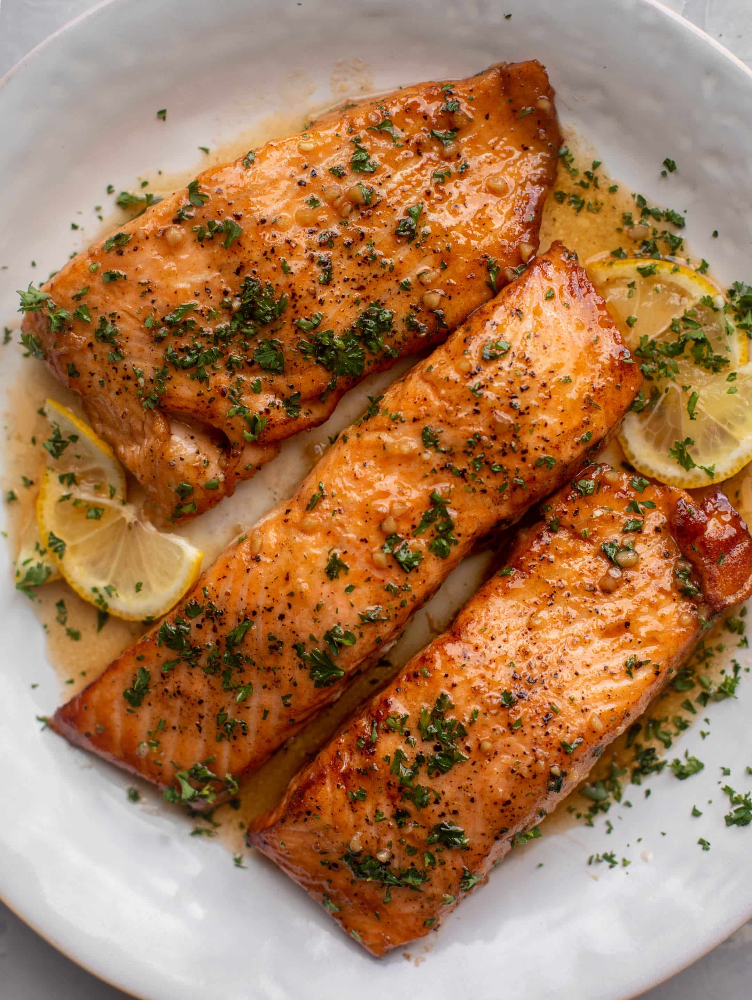

Garlic Butter Salmon

Description
Garlic Butter Salmon might look like a simple recipe, but it's got clout.
Salmon is basted continuously with bubbling garlic butter so it seeps into every crack and crevice.
A cheffy technique that's actually dead simple yet produces a luxurious result - you'll feel (and look) like a pro!
Ingredients
- Salmon fillets
- Garlic
- Butter
- Lemon
- Parsley
Steps
- Season salmon with salt and pepper
- Sear the curved presentation side of the salmon (ie. put it in upside down) and cook for 3 minutes until it is nicely golden
- Butter and garlic - Turn the salmon, cook another minute, then add the butter. As soon as the butter melts, add the garlic
- Baste, baste, baste - Immediately after you've added the garlic and even before it has had a chance to go golden, start basting. To do this, tilt the pan slightly so the butter pools on one side. Then scoop up the butter using a large spoon and spoon it over the salmon. The garlic will cook as you baste so by the time the salmon is done, the garlic is perfectly golden
- Baste for 1 1/2 minutes in total, which should be a total cooking time of around 3 minutes for the second side (1 minute cooking after turning + 30 seconds butter melting time + 1 1/2 minutes basting). Target an internal temperature of 50°C/122°F for medium-rare (optimum juiciness), with the thermometer inserted into the middle of the thickest part of the salmon. See below for more information on the internal temperature of cooked salmon
- Rest 3 minutes, then serve with the garlic butter in the pan!